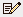

The Flow Plan View Controls are used to control plan (horizontal) displays (flow vectors, wind barbs, streamlines, trajectories, and curly vectors) of vector based data (e.g., wind components). They are similar to the Plan View controls. For more information on what wind speeds correspond to each of the wind barbs in McIDAS-V displays, please see the table in the FAQ.
The seven types of Flow Displays are Vector Plan View, Vector Colored by Speed, Vector Colored by Another Parameter, Wind Barb Plan View, Wind Barb Colored by Speed, Wind Barb Colored by Another Parameter, and Streamline Plan View. Under the 3D Surface displays, additional display types of Vectors Over Topography, Wind Barbs Over Topography, and Streamlines Over Topography can be selected. Under Flow Cross Section displays, Vector Cross Section and Wind Barb Cross Section can be selected. The Layer Controls listed below apply for all display types:
Image 1: Flow Displays Controls
- Show - Switches between displaying Vectors, Streamlines, Trajectories, and Curly Vectors. Note that in order to use Trajectories or Curly Vectors, at least four timesteps must be displayed, otherwise, these Show modes will be inactive.
- Vectors - Displays vectors in the Main Display window.
- Size - Changes the length of the vectors. The Size box is an editable box where you can enter a new size and press Enter, or use the slider () to change the value.
- Autosize - Controls the size of the vectors based on zoom level. If the checkbox is checked, the size of the vectors will change proportionally as the zoom level changes. When unchecked, the vectors will remain the same size regardless of zoom level.
- Streamlines - Displays streamlines in the Main Display window.
- Density - Changes the density of the streamlines on the display. More streamlines will be displayed as the slider is moved closer to 'High'.
- Trajectories - Displays trajectories in the Main Display window.
- Trajectory Form - Allows for selecting the type of trajectory used in the display. The options are Line, Cylinder, Ribbon, and Deform Ribbon.
- Length Offset - Sets the number of timesteps to include in each trajectory.
- Arrow - Adds an arrow head to the trajectories if the Line Trajectory Form is selected.
- Curly Vectors - Displays curly vectors in the Main Display window. This option draws vectors that include multiple timesteps.
- Vector Length - Sets the length, or number of timesteps included with each curly vector.
- Arrow Scale - Sets the size of the arrows in the Main Display window for all of the Show modes.
- Skip - Defines the number of grid points that are skipped to mitigate cluttering in the display. A skip interval of 0 utilizes all grid points, 1 uses every other grid point, 2 uses every third grid point, etc. This value can be modified by typing a value into the text field and pressing Enter or by using the slider button.
- Range - Lists the current range of data for sizing the vectors. Click on the Edit () icon to change the range. This is an option for all of the Flow Displays displays.
- Color - Changes the color of the vectors, streamlines, and trajectories in the display. Note that if the displayed field is derived from speed and direction fields (not u- and v-wind components), or colored by another parameter, the vectors, streamlines, and trajectories will be colored by the speed or the color-by field. In this case, the Color field will be Color Table, where the user can define the enhancement and enhancement range used for the display.
- Line Width - Sets the line width (thickness) in the display. Click on the
 or
put in a value and hit enter to change the value.
or
put in a value and hit enter to change the value. - Levels - Lists the native grid levels. Click on one level value to reset the plan to that level. The plan level in use is shown in the data's native altitude units. The Levels box is editable. Click in the box, enter a value and hit return to set your own value. Additionally, you can click on the arrows to the right of the Levels box to switch levels, or click on the Cycle checkbox to animate vertically through all available levels.
- Selector Position - Determines the vertical positioning of the Selector line with respect to other variables displayed in the Main Display window. This is an option with the Vector Cross Section and Wind Barb Cross Section displays.
- Vertical Scale - Changes the vertical axis of the chart in the Display tab of the Layer Controls tab of the Data Explorer.
- Autoscale - Scales the Y-Axis automatically to the data range along the selector line in the display.
Many of the menu items seen utilizing this display are standard options that can be found in the Menus section of the Layer Controls page. However, there are some options that are unique to this display.
The Edit menu has these unique options:
- Levels - Represents the level where the data is displayed. This is an option for the Vector Plan View, Streamline Plan View, and Wind Barb Plan View display types.
- Color - Sets the color of the streamlines, vectors, wind barbs, trajectories, or curly vectors in the display.
- Change Color Unit - Sets the unit to color the streamlines, vectors, wind barbs, trajectories, or curly vectors by. This allows the displayed field to be colored by any unit of speed, regardless of the unit used to originally plot the field.
The View menu has these unique options:
- Use Grid Projection - Re-centers the display and resets the zoom level back to the display's initial settings without changing any other preferences you have modified. This is an option for the Vector Plan View, Streamline Plan View, and Wind Barb Plan View display types.
- Enable Adaptive Resolution (Under Development) - Turns adaptive resolution on or off for the layer. This menu item is only available if adaptive resolution is enabled in the User Preferences. Note that adaptive resolution is still under development.